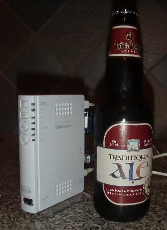
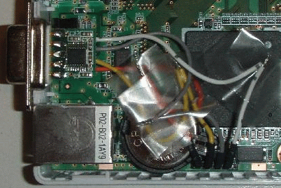

![[OpenBSD]](images/smalltitle.gif)
OpenBSD/landisk

OpenBSD/landisk runs on machines related to the
IO-DATA USL-5P, using a
Hitachi/Renesas
SH-4 CPU.
This platform comes in a variety of models:
- IO-DATA USL-5P, using CF storage (Japan; as shown)
- IO-DATA HDL-U, HDL-AV, HDL-W and HDLM-U series (Japan)
- SuperTank LAN Tank (SOTO-HDLWU) (Japan)
- IO-DATA UHDL-160U and UHDL-300U (May be found in USA)
- Plextor PX-EH16L, PX-EH25L and PX-EH40L
Note: The "Giga-landisk" and HDL-F machines are ARM-based
(both Intel XScale & Marvell), some of which are supported by the
armish architecture.
Table of contents
History
OpenBSD/landisk is the 1st OpenBSD port to a
Hitachi/Renesas SH-4 based machine.
It is hoped that other SH-4 based machines will show up which are
interesting enough for our user and development community, but the SH-4
processor is normally used only in true embedded products.
This processor architecture is the first 32-bit sucessor of a series
of extremely bizarre 8 and 16 bit processors by Hitachi. It has a
very strange instruction set and MMU, and developers find it quite a
challenge to map their knowledge of Unix low-level ideas to the
processor architecture.
Current status
Hardware support is mostly complete and quite stable.
Supported hardware
For a complete system component and device driver listing for this architecture, see intro(4/landisk).
- HITACHI SH4 SH7751R processor at 266MHz.
- 64MB of ram.
- re(4) 100Mbit ethernet.
- wdc(4) drive controller connected to either flash or microdrive in a CF socket, on some models.
- pciide(4) IDE drive controller supporting wd(4), on some models.
- com(4) serial port console at 9600 baud (lacking hardware flow control).
- ehci(4) and ohci(4) USB controllers supporting most usb(4) devices.
- power(4) button and some LEDs.
Getting and installing
The latest supported OpenBSD/landisk release is
OpenBSD 5.7.
Here are the
OpenBSD/landisk 5.7 installation instructions
.
Snapshots are made available from time to time, in
this location
as well as in a few
mirrors.
Here are the
OpenBSD/landisk snapshot installation instructions
as well.

Serial cable connection
All of these machines require a special serial cable which does
voltage conversion, and can hopefully be purchased along with the
card. This cable normally contains a little max232 or similar chip
which converts from the 3.3V signals to +/-12V. The IO-DATA cable
has pins which can grip the inside of the holes. Or you can attempt
to build your own using
some Japanese instructions.
The IO-DATA cable converts from a DB9 connector to a 5-pin header
(3.3V Tx Rx GND NC). Note that the Rx and Tx pins on the board are
swapped compared to the ARM-based machines made by IO-DATA.
All the board models have a 5-pin connector (called CN7) which the cable
can plug into -- except for the USL-5P which has a 4-pin header (thus
requiring removal of the spare pin).
A USL-5P is shown with a modified IO-DATA cable. In this case the cable
has been shortened significantly and the DB9 connector is glued into a slot
carefully cut into the plastic between the ethernet and a USB port.